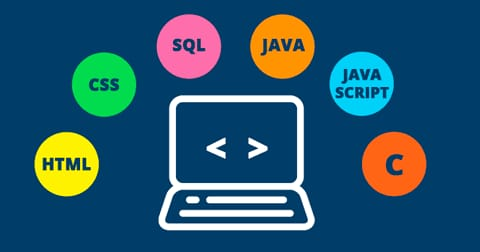

Es un estilo de desarrollo de programas Es decir, un modelo para resolver problemas computacionales. Los lenguajes de programación, necesariamente, se encuadran en uno o varios paradigmas a la vez a partir del tipo de órdenes que permiten implementar, algo que tiene una relación directa con su sintaxis.
La programación imperativa es la forma natural de programar un computador, es el estilo de programación que se utiliza en el ensamblador, el estilo más cercano a la arquitectura del computador Características de la arquitectura arquitectura clásica de Von Newman: memoria donde se almacenan los datos (referenciales por su dirección de memoria) y el programa unidad de control que ejecuta las instrucciones del programa (contador del programa) Los primeros lenguajes de programación (como el Fortran) son abstracciones del ensamblador y de esta arquitectura, lenguajes más modernos como el BASIC o el C han continuado esta idea
La programación estructurada es un paradigma de programación orientado a mejorar la claridad, calidad y tiempo de desarrollo de un programa utilizando únicamente subrutinas o funciones y tres estructuras: secuencial, condicional y repetitiva.
A finales de los años 1970 surgió una nueva forma de programar que daba lugar a programas más legibles, fiables y eficientes. Se basaban en el teorema del programa estructurado, propuesto por Böhm Jacopini.
Demuestra que todo programa puede escribirse utilizando únicamente las tres estructuras de control siguientes:
-Estructura secuencial. Está formada por una secuencia de llamadas a instrucciones del lenguaje o funciones del programador.
-Estructura condicional. Es aquella que ejecuta una estructura si se cumple una condición booleana.
-Estructura iterativa con condición. Es aquella que ejecuta una estructura una y otra vez si se cumple una condición booleana.

Este método de desarrollo de software, que también se denomina aplicación, gira en torno a mantener el código lo más conciso posible. También se centra en lograr un resultado final muy específico. La programación imperativa es otro término utilizado para designar este tipo de desarrollo. Cuando es obligatorio que un programa complete ciertos pasos para lograr resultados específicos, se dice que el código se ha escrito de acuerdo con la programación procedimental.
-El software que es muy complejo puede requerir literalmente miles de líneas de código, lo que hace que sea un poco más difícil para un equipo de personas trabajar con él.
-Los desarrolladores de software que programan de acuerdo con este concepto suelen redactar un plan preliminar en lenguaje sencillo antes de escribir el código.
-Los programas son más fáciles de entender. Un programa estructurado puede ser leído en secuencia, de arriba hacia abajo, sin necesidad de estar saltando de un sitio a otro en la lógica, lo cual es típico de otros estilos de programación.
El método más conocidos para resolver un problema es dividirlo en problemas más pequeños, llamados subproblemas. Esta técnica se usa mucho en programación ya que programar no es más que resolver problemas, y se le suele llamar diseño descendente, metodología del divide y vencerás o programación top-down.
-Al aplicar la programación modular, un problema complejo debe ser dividido en varios subproblemas más simples, y estos a su vez en otros subproblemas más simples.
-Cada uno de estos módulos tiene una tarea bien definida y algunos necesitan de otros para poder operar.
-Varios programadores pueden trabajar en el mismo proyecto si está dividido en módulos.
-Los programas se pueden desarrollar más rápidamente, ya que los módulos pequeños e independientes son más fáciles de entender, diseñar y probar que los programas grandes
Este paradigma no necesita definir algoritmos puesto que describe el problema en lugar de encontrar una solución al mismo. Este paradigma utiliza el principio del razonamiento lógico para responder a las preguntas o cuestiones consultadas.
Si estás codificando en un lenguaje que sigue el paradigma declarativo, escribe código que especifique lo que quieres hacer, sin decir cómo.
Entendemos por programación funcional un lenguaje de programación declarativo donde el programador especifica lo que quiere hacer, en lugar de lidiar con el estado de los objetos. Es decir, las funciones estarían en un primer lugar y nos centraremos en expresiones que pueden ser asignadas a cualquier variable. El origen del modelo de programación funcional, pese a ser algo de relativa reciente aceptación, tiene su origen en el cálculo lambda. El cálculo lambda es un sistema desarrollado en la década de los 30 del siglo XX, donde buscaban investigar la naturaleza de las funciones y la computabilidad.
-Únicamente significa lo que dice, es decir, estamos ante un lenguaje declarativo y siempre devolverá el mismo resultado, mientras que el lenguaje imperativo no es así.
-El almacenamiento de datos es implícito, por lo que las operaciones asignan almacenamiento solo cuando es necesario y luego se libera automáticamente si se vuelve inaccesible.
-No existen efectos colaterales: Una función, si tiene todos los parámetros definidos por valor y no se hacen asignaciones a variables globales, no tendrá efectos colaterales.

La programación lógica o predictiva está basada en la lógica matemática, siguiendo una serie de principios basados en hechos y suposiciones. Este tipo de programas aplica las reglas de la lógica matemática para ir resolviendo los problemas a los que se enfrenta. Ejemplos de este tipo de lenguajes son el Haskell, Prolog o JavaScript.
-Dentro de un programa lógico existen dos conjuntos principales de código: hechos y reglas. Las reglas se aplican a los hechos para así obtener conocimiento sobre el medio ambiente.
-En lugar de darle instrucciones a una computadora con el programa, se establecen relaciones entre los objetos. De esta manera la computadora puede razonar estas relaciones y así alcanzar soluciones lógicas.